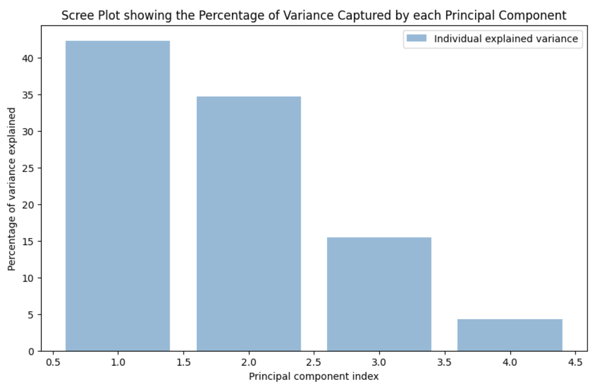

Dimensionality Reduction
Project Proposal
Project Outline
- The goal of the project is to To enhance the accuracy and speed of ADHD diagnosis compared to traditional methods, reducing the dependency on subjective assessments.
- Using the participant's personal characteristic data (site of data collection, age, gender, handedness, performance IQ, verbal IQ, and full scale IQ) as the input feature to diagnose (classify) that individual into one of three categories: healthy control, ADHD combined (ADHD-C) type, or ADHD inattentive (ADHD-I) type.
- Using the existing public datasets related to ADHD, such as the ADHD-200 dataset, for model training and validation
- The data contains both healthy controls and ADHD patients
- We need to find whether the person has ADHD or not
- The dataset in hand is Phenotypic data which has personal characteristic of people
- The categorical variables are gender,Site,Handedness, ADHD Measure,DX
- The numerical variables are Age,ADHD Index,Verbal IQ,Performance IQ,Full4 IQ
Objective
- ADHD datasets can include a wide range of variables,pertaining to the Phenotypic characteristics. PCA helps in reducing the number of variables while retaining the most important information. This simplification makes the data easier to visualize, analyze, and interpret.
- PCA can reveal patterns in the data that might not be immediately apparent. It helps in understanding the underlying structure of the data by identifying the principal components that explain the most variance.
- T- SNE on the other hand captures non linear relationship between variables and therefore is more powerful than PCA
- If the primary goal is to visualize high-dimensional data in 2D or 3D for exploratory analysis, t-SNE is often more effective. It can create more meaningful and distinct clusters of data points.
Tools and Libraries
- Using Python as the primary programming language for its extensive support and libraries in data analysis and machine learning.
- scikit-learn:For implementing various machine learning algorithms, particularly for classification tasks.
- TensorFlow/Keras : To explore deep learning models, especially when working with large neuroimaging datasets.
- Pandas & NumPy : For data manipulation and numerical computations.
- Matplotlib & Seaborn:** For data visualization to analyze features and results.
Dimensionality Reduction Tools: from sci-kit library of python
Project Report
Implementation of PCA
- PCA is a linear dimensionality reduction technique that projects data along the directions of maximum variance. It effectively captures the global structure of the data.
- It reduces dimensions while trying to preserve as much variance (information) as possible. However, it might miss complex, non-linear relationships within the data.
- The first component explains the most variance, with each subsequent component explaining less.
- A high cumulative variance (e.g., 70-90%) by the first few components indicates that they retain most of the information in the original data.
- Principal Component Loadings:Loadings indicate the correlation between the original variables and the principal components. They help in understanding the contribution of each original variable to each principal component.
- High absolute values of loadings suggest that the corresponding original variable has a strong influence on that principal component.
code work-flow/implementation
- Data is imported into data in a format that PCA can work with, typically a pandas dataframe
- PCA is affected by the scale of the features, so the data is standardized before applying PCA using the StandardScaler()
- apply PCA from the sci-kit library as follows
pca = PCA(n_components=2)
pca.fit(data_scaled)
data_pca = pca.transform(data_scaled)
- After applying PCA, we can examine the results from the scree plot
- A scree plot shows the variance explained by each principal component. It helps in determining the number of components to retain, often done by identifying the 'elbow' in the plot, where the variance explained by additional components becomes marginal.  
Limitations and Considerations:
- PCA assumes linear relationships and may not work well with non-linear data.
- It is sensitive to the scaling of variables; hence normalization or standardization is often required before applying PCA.
- PCA can be influenced by outliers, so outlier detection and treatment may be necessary.
Applications:
PCA is used in various fields like finance (risk management, portfolio construction), biology (genomic data analysis), marketing (customer segmentation), and many others for pattern identification, feature extraction, and data simplification.
Resutls
- From the plot below the 4th principal component i.e PC4 & PC3 are capturing the least variance of data i.e only about 15% of it so we can avoid using that principal component
- We are considering only PC1 and PC2 as they contribute most to the variation in the data
Implementation of T-SNE
- t-SNE is a non-linear technique that excels in uncovering local structures and patterns in the data. It's particularly effective at separating clusters and revealing intricate structures.
code work-flow/Implementation
- The code selects specific features (columns) from the dataset X, which in this case are 'DX', 'Verbal IQ', and 'ADHD Index'. These features are presumably important for the analysis and are stored in a new DataFrame features.
- t-SNE Implementation: It initializes a t-SNE model with certain parameters (n_components=2, random_state=42, perplexity=30, learning_rate=200, n_iter=500). This configuration is important as it determines the quality and interpretability of the output.
- The t-SNE model is then applied to the features DataFrame to reduce the dimensionality of the data to two components. This makes it possible to visualize the data in a 2D scatter plot.
- The results of the t-SNE, which are the two-dimensional representations of each data point, are added to the original DataFrame df as new columns (tsne-2d-one and tsne-2d-two).
- A scatter plot is created using the Seaborn library, with tsne-2d-one and tsne-2d-two as the x and y axes, respectively.
- The points in the scatter plot are colored based on a categorical variable from the dataset, labeled as "Site". The color palette is dynamically generated based on the number of unique values in the 'Site' column. The plot is given a title, and labels for both axes.
- Visualization: Finally, the plot is displayed. This visual representation allows for the observation of patterns, clusters, and relationships within the high-dimensional data, now represented in two dimensions.
Limitations
- While t-SNE is excellent at visualizing clusters and relationships between close neighbors, it can distort the true distances between widely separated data points, potentially misrepresenting the global structure.
Results
- t-SNE reduces the number of variables in a dataset while attempting to preserve the significant structures and relationships between data points. In our case it reduced it to 2 features.
- we can interpret from our resutls that Data points that are similar tend to group together, forming distinct clusters. The presence of these clusters can indicate inherent groupings in the data, such as different types or categories.
- Points that do not belong to any specific cluster or that lie far from all clusters could be considered outliers
Compare PCA and Tsne
Principal Component Analysis (PCA) and t-Distributed Stochastic Neighbor Embedding (t-SNE) are two popular techniques for dimensionality reduction and data visualization, each with its unique strengths and limitations. Let's evaluate them in terms of preserving data structure and information, and compare their visualization capabilities.
Preserving Data Structure and Information
PCA:
- Preservation of Global Structure:** PCA is a linear technique that reduces dimensionality by projecting data onto the directions of maximum variance. It preserves the global structure of the data, meaning relationships between widely separated data points are maintained.
- Information Loss:** PCA can lose information, particularly in cases where important data variance occurs along directions of lesser overall variance. It may not capture nonlinear relationships well.
- Interpretability:** PCA components are linear combinations of original features, which can sometimes be interpreted in terms of the original data.
t-SNE:
- Preservation of Local Structure:** t-SNE is a nonlinear technique adept at preserving local structures and relationships within the data. It excels at revealing clusters or groups in the data.
Visualization Capabilities
PCA:
- Simplicity:PCA provides a straightforward visualization, typically in 2D or 3D, with axes representing principal components
- Scalability:PCA scales better to large datasets and higher dimensions.
- Linear Separation:** Effective for datasets where class separation is linear.
t-SNE:
- Detailed Clustering: t-SNE often provides more insightful visualizations for complex datasets with inherent clusters.
- Non-linear Patterns: Better at visualizing datasets with non-linear patterns.
- Computational Intensity: More computationally intensive, especially for large datasets.
When one would outperform the other
PCA is Preferred When
- You need a quick, general overview of the data.
- The dataset is large, and computational resources are a concern.
- You require a linear dimensionality reduction or are dealing with largely linearly separable data.
- Interpretability of components in terms of original features is important.
t-SNE is Preferred When:
Definition
Dimensionality reduction is the process of reducing the number of features (or dimensions) in a dataset while retaining as much information as possible. This can be done for a variety of reasons, such as to reduce the complexity of a model, to improve the performance of a learning algorithm, or to make it easier to visualize the data.